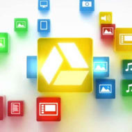

Con esta aplicación podemos crear y editar presentaciones y compartirlas libremente con nuestros contactos. Podremos importar y convertir archivos .ppt ó .pps que podremos descargarlos en nuestro ordenador en diferentes formatos.